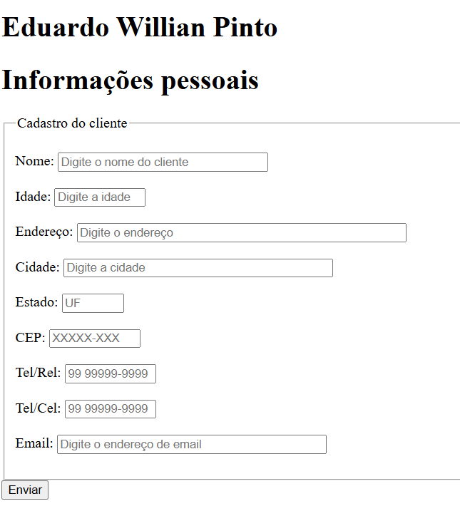
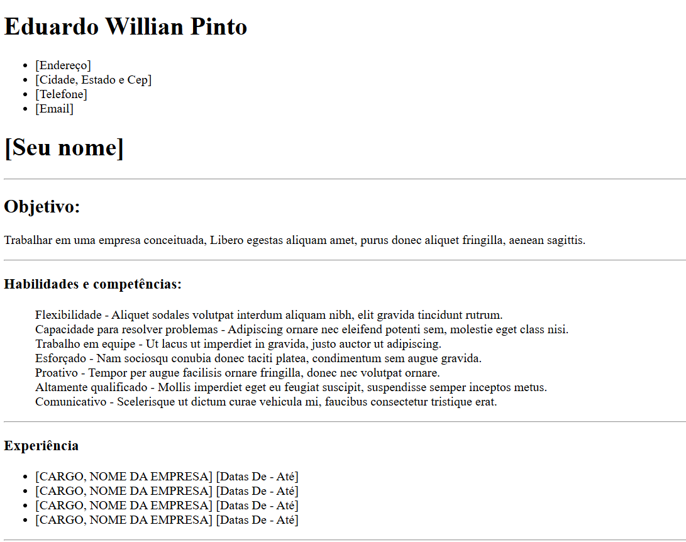
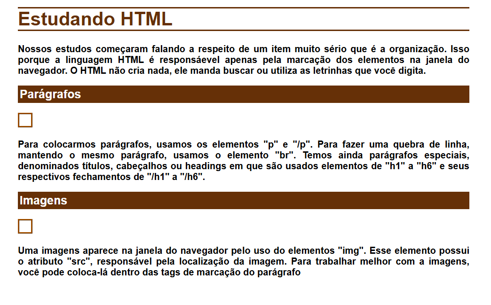
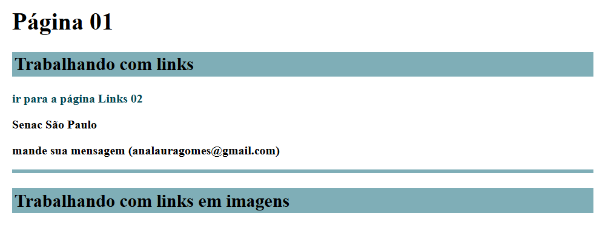
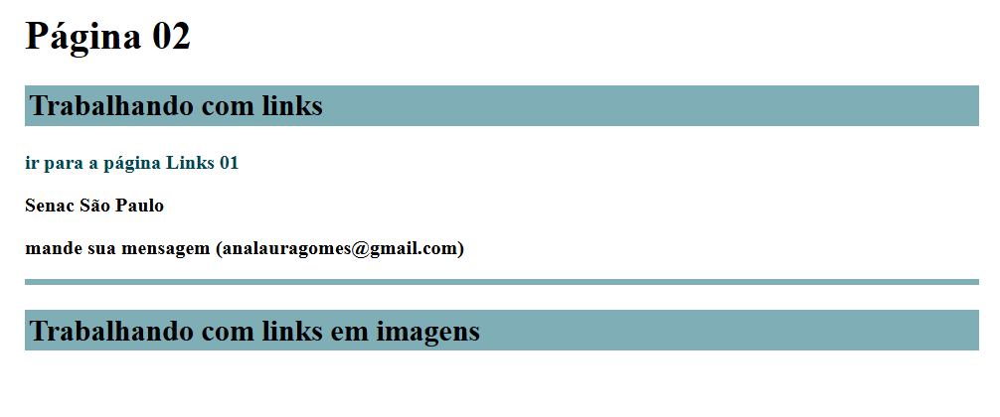
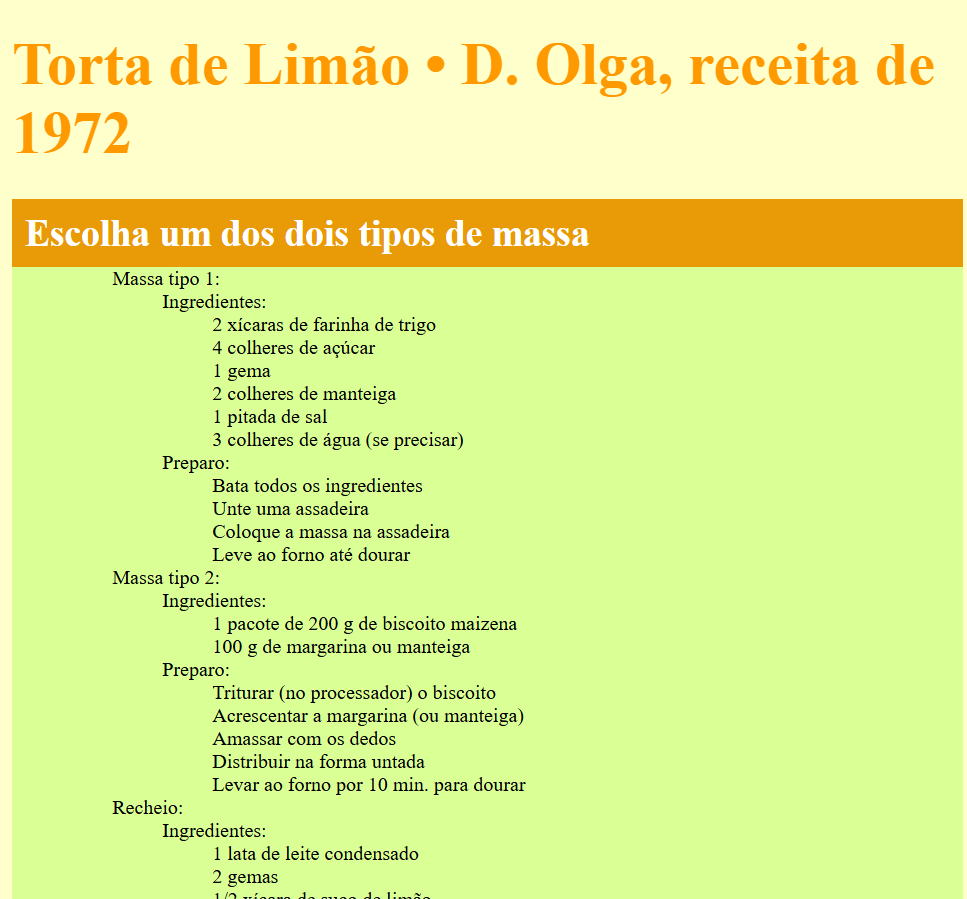
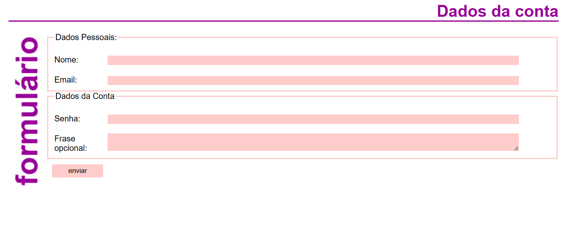
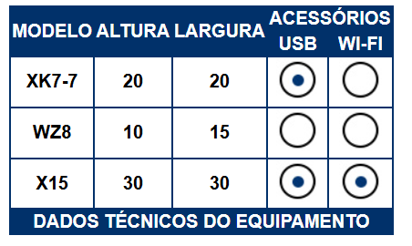

Combinando listas
Eduardo Willian Pinto

Nesta atividade foi azpresentado o conceito de listas uxando como exemplo uma receita de bolo com a lista não ordenada os ingredientes e a ordenada com o preparo.
Eu aprendi sobre listas ordenadas (ol) e não ordenadas (ul) com os tópicos separados entre os (li)
voltarBem vindo ao meu site
Eduardo Willian Pinto

Nesta atividade foi apresentado o conceito diferentes tipos de titulos (h1 e h2) e omo deixar o texto em negrito, italico ou excluido usando um tema de site pessoal.
Também foi apresentado as "dl", "dt" e "dd" que englobam uma lista de pares de termos e descrições.
voltarTabela de produtos
Eduardo Willian Pinto

Nesta atividade aprendi sobre tabelas, bordas e como mesclar elementos entre as linhas e colunas usando o rowspan e colspan.
No html aprendi a usar "tr", "td" "table", "caption" e aplicar imagens usando o "img".
voltarQual a melhor raça de cachorros para crianças?
Eduardo Willian Pinto

Nesta atividade aprendi a mexer com links para deixar a navegação mais rapida, podendo ir e voltar para cada tópico
No html aprendi a usar "a", "id" "#tópico".
voltarAgendamento para banho e tosa
Eduardo Willian Pinto

Nesta atividade aprendi a usar labels e imputs para indicar o que o usuário deveria retornar e seprar cada grupo em fieldsets e divs, tabem vi a diferença entre os inputs como checkbos ou tempo
No html aprendi a usar "fieldset", "div" "label", "input" e "type" para inputs.
voltarCadastro
Eduardo Willian Pinto
Essa atividade foi parecida com a anterior usando "label" e "input" para fazer um cadastro
Um reforço para a criação de cadastros
voltarCurriculo
Eduardo Willian Pinto
Essa atividade foi criado um modelo de curriculo usando "hr" e listas.
No html aprendi a usar "hr" cara criar uma linha embaixo de algum elemento.
No html aprendi a usar "hr" cara criar uma linha embaixo de algum elemento.
voltarGrade Cursos Senac
Eduardo Willian Pinto

Essa atividade foi criado um uma grade parecida com a dos produtos
Essa atividade foi um reforço para a criação de tabelas
voltarMural de cães
Eduardo Willian Pinto

Essa atividade me ensinou a usar links da web para aplicar nos sites
Essa atividade foi parecida com aquela das diferentes raças de cachorros
voltarIndex
Eduardo Willian Pinto
Essa atividade foi para criar um index para agrupar as 4 anteriores atravez de um link
Essa atividade foi parecida com essa que estou fazendo agora
voltarModelo 1
Eduardo Willian Pinto

Essa atividade, que teve modelos do 1 ao 4, foi a introdução ao CSS e me ensinou a mudar a aparencia das paginas
No css eu aprendi a usar varios modos de personalizar a pagina
voltarModelo 2
Eduardo Willian Pinto
Essa atividade, que teve modelos do 1 ao 4, foi a introdução ao CSS e me ensinou a mudar a aparencia das paginas
No css eu aprendi a usar varios modos de personalizar a pagina
voltarModelo 3 parte 1/Modelo 3 parte 2
Eduardo Willian Pinto
 Essa atividade, que teve modelos do 1 ao 4, foi a introdução ao CSS e me ensinou a mudar a aparencia das paginas
No css eu aprendi a usar varios modos de personalizar a pagina
voltarModelo 4
Eduardo Willian Pinto
Essa atividade, que teve modelos do 1 ao 4, foi a introdução ao CSS e me ensinou a mudar a aparencia das paginas
No css eu aprendi a usar varios modos de personalizar a pagina
voltarAvançado 1
Eduardo Willian Pinto
Essa atividade teve 2 modelos mais avançados e ensinou mais jeitos de mudar a aparencia das paginas, usando o float para mudar a posição de certos elementos
No css eu aprendi a usar mais modos de personalizar a pagina
voltarAvançado 2
Eduardo Willian Pinto
Essa atividade teve 2 modelos mais avançados e ensinou mais jeitos de mudar a aparencia de tabelas
No css eu aprendi a usar mais modos de personalizar a pagina
voltarCurriculo 2
Eduardo Willian Pinto
.png)
A aps de montar um corriculo e eu usei o as div para facilitar as posições de cada tópico
A atividade incentivou o uso do Github para enviar a atividade
voltarPortal da floresta
Eduardo Willian Pinto

Por fim o portal da floresta onde eu aprendi sobre asides e um uso maior sobre o float
voltar